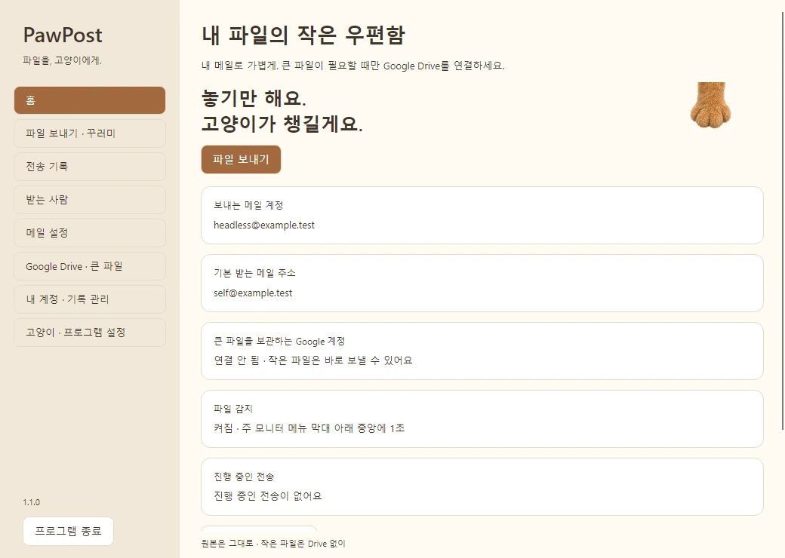

흩어진 파일을 한 꾸러미로
여러 파일과 폴더는 자동 ZIP으로.
한글 이름과 폴더 구조를 유지해요.
A LITTLE PAW. A LITTLE HELP.
파일 보내는 일에, 작은 즐거움.
귀여운 고양이 발이 파일을 챙겨
원하는 사람에게 전달해요.
Windows & macOS · 원본 파일은 그대로
파일을 놓거나, 버튼으로 만나보세요.
브라우저 체험 · 이름과 개수만 표시해요.
파일 내용을 읽거나 업로드·메일 전송하지 않아요.
SMALL GESTURE, LESS FUSS
나에게 보낼 자료도, 친구와 나눌 사진도.
화면 위에 살짝 맡겨 주세요.
고양이는 파일을 따라오고,
PawPost는 보내는 일을 차근차근 챙겨요.
평소에는 조용히 숨어 있으니까요.
YOUR NEW LITTLE ROUTINE
처음 한 번 연결하고,
다음부터는 가볍게 맡기세요.
보내는 메일과 받을 주소를 설정해요.
큰 파일이 필요하면 내 Drive도 연결해요.
파일을 상단 중앙에 1초 들고 있어요.
고양이 발이 파일을 따라올 거예요.
놓은 파일과 받는 사람을 확인해요.
압축부터 전송 결과까지 알려드려요.
상단 감지가 어려운 환경에서도, 앱의 ‘파일 보내기’ 창으로 보낼 수 있어요.
CUTE OUTSIDE. CONSIDERED INSIDE.
자주 보내는 사람, 보냈던 기록,
진행 상황까지 한곳에서.

여러 파일과 폴더는 자동 ZIP으로.
한글 이름과 폴더 구조를 유지해요.
자주 보내는 사람은 즐겨찾기에.
발의 감지 너비, 애니메이션과 소리도 내 취향대로.
압축·업로드·메일 전송 상태를 구분해요.
완료는 메일 서버 접수 후에만 알려드려요.
보내기 위해 복사·압축할 뿐,
원본 파일을 바꾸거나 지우지 않아요.
개발자의 저장소를 거치지 않고,
내가 연결한 Google Drive에 업로드해요.
링크를 열 사람을 확인하고 동의해요.
파일을 마음대로 공개하지 않아요.
DOWNLOAD PAWPOST
Mac 칩은 → ‘이 Mac에 관하여’에서 확인해 주세요.
Windows 10 / 11 · x64
1.1.0 75.22 MB · EXE
Windows 다운로드1.1.0 · 코드 서명 없음
M1 · M2 · M3 · M4 이후 · macOS 15+
1.1.0 52.85 MB · DMG
M시리즈 다운로드M2는 이 버전 · 보안 차단 가능 · 첫 실행 미검증
Intel 프로세서 · macOS 15+
1.1.0 55.08 MB · DMG
Intel 다운로드보안 차단 가능 · 다운로드 후 첫 실행 미검증
ONE TIME, YOUR OWN ACCOUNT
네이버 · Gmail · 기타 SMTP
일반 로그인 비밀번호와 달라요.
회사·학교 계정은 관리자 정책이 적용될 수 있어요.
큰 파일을 보낼 때만 필요해요
Cloud 콘솔이나 OAuth JSON은 필요 없어요.
요청 권한은 앱에서 사용하는 파일용 drive.file입니다.
배포자가 Google OAuth 프로덕션 전환을 확인했습니다. 테스트 목록 밖의 계정이라는 사용자 확인과 함께 Windows에서 실제 로그인·64 KiB 비공개 업로드·다운로드가 성공했습니다. 계정 한 개의 검사이며 사용자 수 무제한을 검증한 것은 아닙니다. 공개 연결과 사용자 한도 안내 ↗
Finder나 탐색기에서 파일을 잡은 채 주 화면의 위쪽 중앙에 1초 머물러 주세요. Mac에서는 메뉴 막대 바로 아래입니다. 감지가 일시 정지되어 있지 않은지도 확인하세요.
전체 화면 앱, 다른 모니터, Mission Control 등 환경의 제약이 있다면 PawPost의 ‘파일 보내기 · 꾸러미’ 창으로 파일을 놓거나 파일/폴더 선택 버튼을 사용하세요. 1.1.0에서는 설정에서 최초 감지 너비와 애니메이션을 바꿀 수 있습니다.
메일 서비스가 외부 메일 앱에 발급하는 전용 비밀번호입니다. 네이버·Google의 평소 로그인 비밀번호와 다릅니다. 네이버는 IMAP/SMTP 사용 설정과 2단계 인증의 앱 비밀번호, Gmail은 계정에서 허용하는 앱 비밀번호가 필요합니다. 조직 계정은 관리자가 제한할 수 있어요.
Mac 키체인 창에 필요한 암호는 보통 Mac 로그인 암호입니다. 키체인 창과 PawPost의 메일 연결 창을 구분하세요. 암호나 인증 코드는 제보에 올리지 마세요.
첨부 한도를 넘으면 내 Google Drive로 업로드하고 링크를 메일로 보냅니다. 여러 파일과 폴더는 ZIP으로 묶고, 이미 압축된 DMG·ZIP·영상은 불필요한 재압축을 생략합니다. ZIP이 언제나 작아지는 것은 아닙니다.
메일을 받을 주소와 파일을 열 Google 계정을 확인하고 공유에 동의해야 합니다. 기본은 수신자 제한입니다. Drive 저장 공간과 서비스 한도가 적용되며, 현재 앱은 원본 합계 2 GiB / 10,000개 항목까지 다룹니다.
전송 기록에서 오류와 재시도를 확인하세요. 업로드는 저장된 진행 상태를 확인해 이어갑니다. 메일 서버 응답이 끊겨 결과가 불명확할 때는 중복 발송을 막기 위해 재전송을 보류합니다. 메일함부터 확인해 주세요.
‘완료’는 메일 서버가 접수했다는 뜻이며, 받는 메일함의 수신 여부는 별도 확인이 필요합니다. 애니메이션만 끝났다고 완료로 표시하지 않습니다.
PawPost의 ‘프로그램 종료’를 먼저 누르고 새 설치 파일로 설치하거나 앱을 교체하세요. 사용자 설정과 기록은 앱 파일과 별도로 저장합니다. 업데이트를 위해 계정이나 사용자 데이터를 지울 필요는 없습니다.
Mac은 앱 교체 후 실제 계정을 처음 사용할 때 키체인 접근 승인이 필요할 수 있어요. 이전 1.0.0 파일은 기존 릴리스에 보관되어 있습니다. 자동 설치 업데이트는 하지 않습니다.
현재 설치 파일은 코드 서명이 없어 Windows에서 경고가 나올 수 있습니다. 출처와 SHA-256을 확인하고, 파일이나 보안 경고가 의심스러우면 실행하지 마세요.
‘확인되지 않은 개발자’ 안내: 이 배포 페이지의 파일과 해시가 맞는지 확인하세요. macOS가 ‘시스템 설정 → 개인정보 보호 및 보안’에 해당 앱의 ‘그래도 열기’를 제공할 때에만, 출처를 신뢰하는 경우 그 앱에 한해 실행 여부를 결정할 수 있습니다.
‘손상됨’, 악성 소프트웨어 경고 또는 ‘그래도 열기’가 없음: 실행을 멈추고 오류 화면을 배포자에게 전달해 주세요. 보안 기능을 끄거나 파일의 검역 속성을 지워서 강제 실행하지 마세요.
원본 파일은 수정하거나 삭제하지 않습니다. 메일 인증 정보와 Google 토큰은 각 사용자의 Windows 자격 증명 관리자 또는 Mac Keychain에 저장합니다. 설치 파일에는 개발자의 개인 계정·비밀번호·토큰·전송 기록을 넣지 않았습니다.
Google 연결용 공개 데스크톱 앱 식별 설정은 포함됩니다. 각 사용자가 직접 로그인해야 자신의 Drive를 사용할 수 있습니다. 공유 기본값은 비공개이며 수신자에게 공유하기 전 확인합니다.
설정과 기록은 사용자 컴퓨터에 저장됩니다. Drive에 올린 파일과 공유 권한은 Google Drive에서도 직접 관리할 수 있어요. 앱의 데이터 보관 안내 ↗
A NICER WAY TO SEND